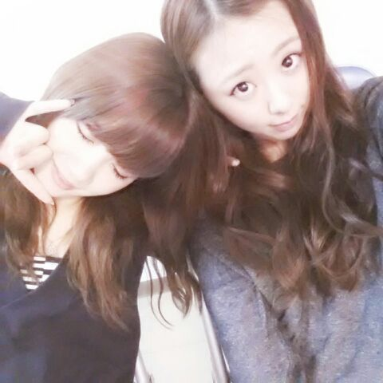
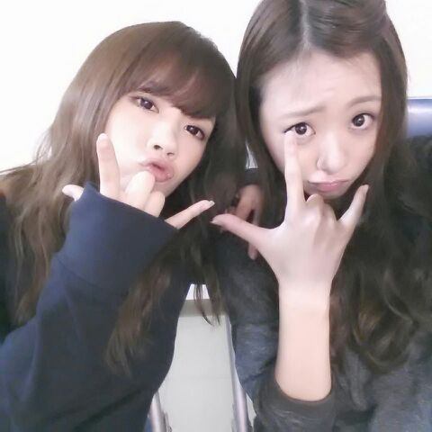

おつかろってぃ〜(*´ω｀*)
* * * * * * *
* * * * *
大阪 大好きぃ〜 ありがとーう
そう. 今日は朝から大阪( ´▽`)/
め・ざ・ま・し・ ライブだよん.
めざましライブで単独ライブを
やらせて頂くのは 乃木坂46が
初めてなのです.
本当に 嬉しゅうことやと思う !!
ありがたいです (/∨\)
一時間半もの時間をめざましTVさんが
与えてくれましまた★
いっぱい いっぱい やりました！
セットリスト...
1 ガールズルール
2 人はなぜ走るのか
3 走れbicycle
4 君の名は希望
5 指望遠鏡
6 コウモリよ
7 狼に口笛を
8 会いたかったかもしれない
9 ハウス
10 ロマンティックいか焼き
11 13日の金曜日
12 制服のマネキン
13 世界で一番孤独なlover
14 扇風機
15 シャキイズム
16 おいでシャンプー
17 ぐるぐるカーテン
いぇ〜い )))
めざましTVさんの皆さん
本当にありがとうございました!
是非 また よんでください(^^)
どこへでも とんでいきます ♪
今日はお天気よくって良かったです
Zepp Nambaまで足を運んでくださった
皆様 今日は 今日も、
本間に ありがとちゃん \(´∨`)/
かっとちゃん ペ !!!
昨日と今日で 久しぶりに
せいたんとのツーショット
たっくさん撮ったんだよね らぶ。
なんか 初期の頃は せいらとよく
撮ってたから懐かしく感じる .
せいら 好きよ 。

いかちーポーズ.どや

せいらとの写メこれからも
はってゆくね ♪
地方組で 同じ学年でやっぱり
仲は安定なんよ ^^
ゆっくり休んでね．
今日は 本当にありがとう ))
のし Rotty☆